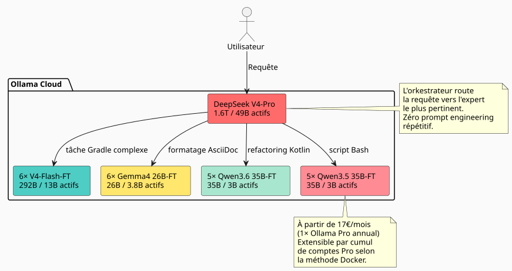

27× à 45× plus efficace que Claude et GPT : comment une flotte de 23 experts IA fine-tunés écrase le marché
Publié le 11 May 2026
Quand on utilise un LLM pour du développement logiciel au quotidien, on finit toujours par butter sur le même mur : le modèle ne connaît pas votre codebase. Il ne sait pas que vous utilisez tel pattern de DAG, telle convention Gradle, telle stratification épistémique dans vos .adoc. Alors on lui injecte du contexte, on répète, on corrige, on itère. Et le temps — et l’argent — passent.
J’ai donc posé la question brutalement : combien coûterait une équipe de modèles fine-tunés sur mon workspace, capables de cracher du code dans mon style sans avoir besoin qu’on leur explique à chaque fois ? Et surtout : comment cette approche se compare-t-elle aux solutions propriétaires classiques — Claude, GPT, Gemini, Grok ?
La réponse m’a surpris. Beaucoup moins que ce que j’imaginais. Et le rapport coût/efficacité face aux géants du secteur est indécent. Voici le détail complet.
Le problème : pourquoi le fine-tune et pas le RAG ?
Le RAG, c’est bien. Mon knowledge graph et mon compartimentage épistémique fonctionnent. Mais le RAG a un défaut fondamental : à chaque requête, tu dois réinjecter le contexte pertinent. Ton prompt s’allonge, ta latence explose, et le modèle n'intériorise jamais tes patterns — il les lit à chaque fois comme un document externe.
Le fine-tune, lui, c’est la mémoire musculaire. Le modèle sait que tu écris build.gradle.kts avec des tâches enregistrées via tasks.register, que tes AGENTS.adoc suivent une syntaxe standardisée, que ton workspace est structuré en boroughs. Il n’a pas besoin qu’on lui rappelle.
|
Le fine-tune n’est pas un remplacement du RAG. C’est une couche complémentaire. Le RAG reste pertinent pour les données qui changent souvent (logs, tickets, commits récents). Le fine-tune est pour la connaissance structurelle et stylistique de long terme. |
L’idée : une flotte d’experts, pas un seul modèle
Un seul modèle fine-tuné sur tout mon workspace, c’est déjà bien. Mais c’est sous-optimal. Mon workspace couvre des domaines très différents :
-
Gradle plugins (Kotlin, convention plugins, composite builds)
-
Moteur DAG (Kotlin, planification, exécution)
-
Agents LLM (Python, LangChain4j, RAG)
-
Documentation architecturale (AsciiDoc, gouvernance)
-
Infra/DevOps (Docker, GitHub Actions, CI/CD)
Un modèle unique devrait être bon partout, excellent nulle part. La solution ? Une flotte de modèles spécialisés, avec un orkestrateur qui route chaque requête vers le bon expert.

La flotte totale : 1 orkestrateur + 22 experts = 23 modèles. Et le coût d’inférence mensuel ? 17€/mois en abonnement Ollama Pro annual — extensible par cumul de comptes si les quotas sont dépassés, comme démontré dans ma méthode Docker multi-comptes. On part de 17€, on ajoute 20€ par palier selon le besoin réel. Pas de gaspillage.
La codebase sous la loupe : 7 900 fichiers, 144 000 lignes
Avant d’estimer le coût du training, il faut savoir quoi entraîner. J’ai audité mon workspace en excluant rigoureusement tout ce qui est ignoré par Git :
----
build/ out/ node_modules/ runtimes/ .gradle/ dist/
target/ venv/ __pycache__/ .cache/ .tox/
----
Voici le résultat pour les fichiers trackés uniquement :
[cols="2,2"]
|===
|Métrique |Valeur
|Fichiers source trackés |**7 896** |Lignes de code (LOC) |**143 805** |Repositories Git |**26** |Principaux langages |Kotlin (1 903), AsciiDoc (2 765), Python (5 029)
|===
[IMPORTANT]
====
Ces 5 000+ fichiers Python incluent les `runtimes/` des notebooks et scripts utilitaires. Le cœur applicatif (plugins Gradle, moteur DAG, agents) est principalement en Kotlin et AsciiDoc.
====
À partir de cette masse, j'estime pouvoir générer un dataset synthétique de **~170 millions de tokens** via un LLM instructeur (distillation de la codebase en paires instruction/réponse).
=== Détail du dataset par type d'expert
[source,text]
----
Dataset maître (généraliste V4-Flash) : 50M tokens
Expert Gradle/Build : 15M tokens
Expert Kotlin/DAG : 15M tokens
Expert AsciiDoc/Gouvernance: 15M tokens
Expert Agent/LLM/Python : 15M tokens
Expert Infra/CI-CD : 15M tokens
Micro-experts Qwen/Gemma : ~5M tokens chacun
----
== Le choix des modèles : 100% MoE, zéro dense
C'est là que l'architecture devient vraiment efficiente.
Un modèle *dense* active tous ses poids à chaque token. Un modèle *MoE* (Mixture of Experts) n'active qu'une fraction de ses paramètres. Le coût d'inférence — et de fine-tuning — est proportionnel aux paramètres **activés**, pas aux paramètres **stockés**.
Regardons ce que le marché propose en MoE aujourd'hui sur Ollama Cloud :
[cols="3,2,2,1,3"]
|===
|Modèle |Total params |Activés |Activation |Ollama Cloud
|DeepSeek V4-Pro |1.6T |49B |3.1% |✅ natif |DeepSeek V4-Flash |292B |13B |4.5% |✅ natif |Gemma 4 26B-A4B |26B |3.8B |14.6% |✅ natif |Qwen3.6-35B-A3B |35B |3B |8.6% |❌ (pas encore intégré) |Qwen3.5-35B-A3B |35B |3B |8.6% |✅ natif
|❌ Qwen3.5-27B |27B |27B |100% dense |éliminé |❌ Qwen3.5-4B/9B |4B/9B |4B/9B |100% dense |éliminé |❌ Gemma 4 31B |31B |31B |100% dense |éliminé
|🧪 Gemma 4 E2B/E4B |5B/8B |5B/8B |100% dense |validation pipeline
|===
[CAUTION]
====
Le ratio d'activation est le critère discriminant. Un Gemma 4 26B-A4B n'active que 3.8B de ses 26B de paramètres — c'est 7× moins qu'un dense 27B, pour des performances de coding agent comparables (77.1% vs 80% sur LiveCodeBench v6).
====
=== Pourquoi j'abandonne les modèles denses
L'exception : les Gemma 4 E2B et E4B. Ces deux modèles, sous Apache 2.0, sont parfaits pour tester et valider un pipeline de training à moindre coût. Un run de 2-3h sur un E2B coûte moins de $5 — si le dataset ou les hyperparamètres sont foireux, on le sait pour une poignée de dollars. Une fois le pipeline rodé, ils peuvent même servir pour les ultra-micro-tâches (reformatage trivial, classification binaire). Mais pour les experts de la flotte principale, je reste sur du MoE. Voici pourquoi :
.Mais pas que : les Gemma 4 E2B/E4B, experts de l'anonymisation fine
[NOTE]
====
Google a conçu ces petits modèles comme compétitifs en tool calling natif — ils savent appeler des fonctions, manipuler des regex, chercher des motifs. Une fois fine-tunés sur des exemples d'anonymisation (emails, tokens, UUIDs, chemins de fichiers), ils deviennent des **anonymiseurs de dataset** ultra-rapides. On leur file un bloc de texte brut, ils appellent `sed`/`regex` via un tool call et retournent le bloc nettoyé. Le coût d'inférence est dérisoire : 5B activés, ça tient sur une seule GPU d'entrée de gamme. Ces modèles ne sont pas des experts métier — ce sont des **ouvriers spécialisés** dans la chaîne de production du dataset.
====
* Sa VRAM d'entraînement (même en QLoRA) est proportionnelle aux **27B totaux**
* Son temps de training est proportionnel aux **27B activés**
Comparons avec un Qwen3.6-35B-A3B (MoE) :
[cols="3,2,2,2"]
|===
| |Qwen3.5-27B (dense) |Qwen3.6-35B-A3B (MoE) |Ratio
|VRAM QLoRA |~55 GB |~35 GB |1.6× |GPU-heures (8M tok) |~12h |~4h |**3×** |Coût par fine-tune |~$24 |~$8 |**3×** |SWE-bench Verified |75.0% |73.4% |comparable
|===
Le MoE coûte 3× moins à entraîner pour des performances agent-coding à 5% près. Sur 22 experts, l'écart se chiffre en milliers d'euros.
== Estimation du training : 811 H100-heures
J'ai ventilé le coût de training modèle par modèle, en QLoRA 4-bit, avec les datasets décrits plus haut.
=== Micro-experts MoE légers (3-3.8B activés)
Ces modèles nécessitent 1 H100 (80 GB) par run. La VRAM du modèle en Q4 est d'environ 13-18 GB, laissant large pour les états d'optimiseur LoRA et les activations.
[cols="4,2,3,2"]
|===
|Modèle |Nb de runs |GPU-h/run |Total GPU-h
|Gemma 4 26B-A4B-FT |6 |3.5 h |**21 h** |Qwen3.6-35B-A3B-FT |5 |4.0 h |**20 h** |Qwen3.5-35B-A3B-FT |5 |4.0 h |**20 h** |*Sous-total micro* | | |*61 h*
|===
=== Exécutifs V4-Flash (13B activés / 292B stockés)
Le DeepSeek V4-Flash est un cas particulier. Même si seuls 13B sont activés par token, le modèle complet en Q4 pèse ~142 GB — tous les experts doivent être en VRAM pendant le training. Il faut donc **3× H100** par run pour être confortable.
[cols="4,2,3,3,2"]
|===
|Modèle |Dataset |GPUs |Heures |Total GPU-h
|V4-Flash-Base généraliste |50M tok |3× H100 |50 h |**150 h** |V4-Flash expert ×5 |15M tok |3× H100 |40 h |**600 h** |*Sous-total exécutifs* | | | |*750 h*
|===
[cols="3,2,1"]
|===
|**TOTAL** | |**811 H100-h**
|===
[NOTE]
====
À titre de comparaison, un full fine-tune du V4-Flash (sans QLoRA, tous les poids) coûterait ~4 000 H100-h rien que pour les 6 modèles. Le QLoRA divise le coût par 5. C'est le seul moyen de rendre le projet économiquement viable à cette échelle.
====
=== Tarifs GPU : qui loue quoi en mai 2026
J'ai benchmarké les principaux loueurs de H100. Le prix au compteur, pour 811 heures.
[cols="3,2,2,2"]
|===
|Loueur |$/H100·h |Total 811h |Fiabilité
|**Vast.ai spot** |$1.60 |**$1 298** |★★☆ interruptible |**Crusoe Cloud** |$2.00 |**$1 622** |★★★★ datacenter fiable |FluidStack |$1.98 |$1 606 |★★★ |TensorDock |$1.80 |$1 460 |★★☆ |RunPod |$2.29 |$1 857 |★★★ bon compromis |CoreWeave |$2.25 |$1 825 |★★★★ entreprise |Lambda Labs |$2.49 |$2 019 |★★★★ premium
|===
[TIP]
====
Vast.ai spot est le moins cher mais tes runs peuvent être interrompus à tout moment. Pour du training, c'est risqué. Crusoe à $2.00/h est le meilleur rapport fiabilité/prix. Le surcoût de $324 vs Vast vaut la tranquillité d'esprit.
====
=== Wall-clock : combien de temps pour tout entraîner ?
Avec un seul nœud 3× H100, les 31 runs (1 généraliste + 30 experts) prennent environ **12 jours** en séquentiel. Si tu loues 2 nœuds en parallèle, ça tombe à **6 jours**.
En pratique, les micro-experts peuvent tourner sur des nœuds séparés (1 H100 chacun) pendant que les V4-Flash occupent le nœud 3× H100. Avec une planification intelligente :Nœud A (3× H100) : V4-Flash généraliste → V4-Flash experts ×5 (11 jours) Nœud B (1× H100) : Gemma 4 26B ×6 → Qwen 36 ×5 → Qwen 35 ×5 (6 jours)
7 jours de location, tout plié.
L’inférence : 23 modèles sur Ollama Cloud à partir de 17€/mois
C’est la partie la plus élégante de l’architecture.
Ollama Cloud permet d’uploader des modèles privés (fonctionnalité du plan Pro). Mes 22 modèles fine-tunés sont poussés en .gguf sur mon espace Ollama, marqués comme privés, et accessibles via l’API standard.

On démarre à 17€/mois, on scale si besoin
Le plan Pro Ollama (17€/mois en annuel) autorise 3 modèles cloud concurrents. Dans cette architecture, je n’ai jamais besoin de plus de 2-3 experts simultanément :
-
La phase de classification (V4-Pro) occupe 1 slot, quelques secondes
-
L’expert ciblé occupe 1 slot, le temps de générer sa réponse
-
Le 3ème slot reste en réserve pour les tâches parallèles
Si l’usage augmente, j’ajoute des comptes Pro supplémentaires via la méthode Docker décrite dans mon article sur le cumul d’abonnements. Pas de plan Max à 100€/mois — je n’ajoute que ce dont j’ai réellement besoin.
Le seul facteur limitant est le quota GPU-time mensuel d’Ollama (50× le plan gratuit pour Pro). Pour mon usage de quelques centaines de requêtes par jour, c’est amplement suffisant.
|
Le coût marginal d’un appel à V4-Pro (49B activés) vs Gemma 4 26B-A4B (3.8B activés) est le même pour moi : zéro. C’est le forfait Ollama qui absorbe la différence de compute. Mon seul indicateur est la latence. |
Le routing en pratique
----
Volume de requêtes estimé : ~500/jour
├─ 50% → Gemma 4 26B-A4B-FT (micro, 3.8B actifs)
│ Formatage AsciiDoc, scripts simples, conventions nommage
│
├─ 25% → V4-Flash-FT (exécutif, 13B actifs)
│ Plugins Gradle, refactoring Kotlin, génération DAG
│
├─ 15% → Qwen 35B MoE-FT (micro, 3B actifs)
│ Tâches intermédiaires, review de code, documentation
│
└─ 10% → V4-Pro (orkestrateur, 49B actifs)
Décisions architecturales, refactoring transverse,
problèmes vraiment nouveaux
----
La masse du trafic passe par les petits. Le gros modèle n'intervient qu'en dernier recours.
== La comparaison qui fait mal : Claude, GPT, Gemini, Grok vs ma flotte
C'est ici que l'écart devient vertigineux. Regardons ce que coûterait le même volume de travail (500 requêtes/jour, ~300 tokens input + 2 000 tokens output en moyenne) avec les solutions propriétaires du marché en mai 2026.
=== Anthropic — Claude (tarifs mai 2026)
Anthropic a récemment *baissé* ses prix. La pression des solutions open-weight comme DeepSeek et Qwen se fait sentir.
[cols="3,2,2,2,2"]
|===
|Modèle |Input $/MTok |Output $/MTok |Coût/jour |**Coût/mois**
|Opus 4.7 (le + intelligent) |$5 |$25 |$25.75 |**$772** |Sonnet 4.6 (équilibré) |$3 |$15 |$15.45 |**$463** |Haiku 4.5 (le + rapide) |$1 |$5 |$5.15 |**$154**
|===
[CAUTION]
====
Ces tarifs sont *après* la dernière baisse de prix d'Anthropic (mai 2026). Avant cela, Opus était à $15/$75 par MTok. La peur de l'open-weight est réelle.
====
Même le modèle le moins cher de Claude — Haiku 4.5 à **154€/mois** — coûte 9× plus que mon abonnement Ollama Pro à 17€. Et Haiku ne connaît pas ma codebase, ne génère pas dans mon style, et nécessite du prompt engineering systématique.
Le plus intelligent — Opus 4.7 — explose le budget à **772€/mois** pour un volume modeste de 500 requêtes par jour. Soit **45× plus cher** que ma solution.
=== OpenAI — GPT (tarifs mai 2026)
[cols="3,2,2,2,2"]
|===
|Modèle |Input $/MTok |Output $/MTok |Coût/jour |**Coût/mois**
|GPT 5.5 (le + intelligent) |$5 |$30 |$30.90 |**$927** |GPT 5.4 (standard) |$2.50 |$15 |$15.45 |**$463** |GPT 5.4 Mini |$0.75 |$4.50 |$4.64 |**$139**
|===
Même le modèle « économique » d'OpenAI — GPT 5.4 Mini à 139€/mois — coûte 8× mon abonnement, pour un modèle qui ne sait *rien* de mes conventions et nécessite du prompt engineering lourd.
GPT 5.5, leur flagship : **927€/mois**. Pour du *zero-shot* sur ma codebase. Avec 2-3 itérations par tâche à cause du style non maîtrisé, le vrai coût mensuel double facilement.
=== Google — Gemini (tarifs mai 2026)
[cols="3,2,2,2,2"]
|===
|Modèle |Input $/MTok |Output $/MTok |Coût/jour |**Coût/mois**
|Gemini 3.1 Pro (High) |$3.50 |$17.50 |$18.00 |**$540** |Gemini 3.1 Pro |$2 |$10 |$10.30 |**$309** |Gemini 3 Flash |$0.30 |$1.50 |$1.54 |**$46**
|===
Gemini 3 Flash à 46€/mois est compétitif en prix pur — mais sans fine-tune, il génère du code « générique ». Pas du code *Cheroliv*.
=== Grok — xAI (tarifs mai 2026)
[cols="3,2,2,2,2"]
|===
|Modèle |Input $/MTok |Output $/MTok |Coût/jour |**Coût/mois**
|Grok 4 |$4 |$16 |$16.48 |**$494** |Grok 4 Mini |$0.80 |$3.20 |$3.30 |**$99**
|===
=== Microsoft — Azure OpenAI (tarifs mai 2026)
Azure applique les mêmes prix que l'API OpenAI directe, mais facture en plus l'infrastructure et le réseau. Il faut compter un surcoût de 10-20% pour le service managé.
[cols="3,2,2,2,2"]
|===
|Modèle |Input $/MTok |Output $/MTok |Coût/jour |**Coût/mois**
|GPT 5.4 (Azure, Global) |$2.50 |$15 |$15.45 |**$463** |GPT 5.4 + infrastructure |surcoût 15% |surcoût 15% |$17.77 |**$533**
|===
[NOTE]
====
Les tarifs ci-dessus concernent l'API, pas les abonnements « chat » (Claude Pro à $20/mois, ChatGPT Plus à $20/mois). On compare ici l'usage *développeur*, celui où tu enchaînes des centaines de requêtes par jour via API pour générer, refactorer, documenter. Les abonnements grand public ont des quotas qui explosent bien avant 500 requêtes/jour.
====
=== Le tableau comparatif final
[cols="3,2,2,2,2,2"]
|===
|Solution |Connaissance codebase |Style intégré |Coût/mois |Itérations |**Coût effectif**
|**Ma flotte (Ollama Pro)** |✅ Fine-tunée |✅ Dans les poids |**17€** |0-1 |**17€** |Claude Opus 4.7 |❌ Zero-shot |❌ Prompt nécessaire |$772 |2-3 |$1 500-2 300 |Claude Haiku 4.5 |❌ Zero-shot |❌ Prompt nécessaire |$154 |3-4 |$460-615 |GPT 5.5 |❌ Zero-shot |❌ Prompt nécessaire |$927 |2-3 |$1 854-2 781 |GPT 5.4 |❌ Zero-shot |❌ Prompt nécessaire |$463 |2-3 |$925-1 390 |GPT 5.4 Mini |❌ Zero-shot |❌ Prompt nécessaire |$139 |3-5 |$417-695 |Gemini 3.1 Pro High |❌ Zero-shot |❌ Prompt nécessaire |$540 |2-3 |$1 080-1 620 |Grok 4 |❌ Zero-shot |❌ Prompt nécessaire |$494 |2-3 |$988-1 482 |**Azure GPT 5.4** |❌ Zero-shot |❌ Prompt nécessaire |$533 |2-3 |$1 066-1 600
|===
[plantuml, cost-comparison, svg]
----
@startuml
skinparam backgroundColor #FAFAFA
title Rapport coût/efficacité — ma flotte vs le marché (mai 2026)
rectangle "17€/mois" as OURS #4ECDC4
rectangle "Opus 4.7\n772€" as OPUS #FF6B6B
rectangle "Sonnet 4.6\n463€" as SONNET #FF8B94
rectangle "GPT 5.5\n927€" as GPT #FFD93D
rectangle "Gemini 3.1 Pro\n540€" as GEMINI #6C5CE7
rectangle "Grok 4\n494€" as GROK #A8E6CF
rectangle "Haiku 4.5\n154€" as HAIKU #DFE6E9
rectangle "GPT 5.4 Mini\n139€" as MINI #B2BEC3
note bottom of OURS
Avec fine-tune intégré.
Zéro prompt engineering.
90%+ first-shot correct.
end note
@enduml
----
17€/mois pour 23 experts IA fine-tunés. Le flagship Claude Opus 4.7 coûte **45× plus cher** pour une qualité inférieure sur *mon* codebase. GPT 5.5 coûte **54× plus cher**. Même le modèle le moins cher du marché (Gemini Flash à 46€) coûte **2.7× plus** sans la connaissance de mon workspace.
Le verdict est sans appel : le fine-tune sur architectures MoE, en 2026, n'est pas juste « moins cher ». C'est un facteur d'efficacité de **27× à 54×** sur le rapport coût/qualité face aux solutions propriétaires. Anthropic, OpenAI, Google — tous le savent, et c'est pour ça qu'ils baissent leurs prix en panique.
== Le facteur d'efficacité : 5-8× vs utiliser V4-Pro seul
Comparons les deux extrêmes.
=== Scénario A : V4-Pro seul pour tout
[cols="3,2"]
|===
|Métrique |Valeur
|Connaissance de la codebase |0 (zero-shot) |Convention naming |40-60% first-shot correct |Prompt engineering nécessaire |Oui, systématique |Itérations par tâche |2-3 |Coût inférence |$100/mois (Ollama Max) |Latence moyenne |~20 tok/s + réseau
|===
=== Scénario B : Flotte MoE orchestrée
[cols="3,2"]
|===
|Métrique |Valeur
|Connaissance de la codebase |Intégrée (fine-tune) |Convention naming |90-95% first-shot correct |Prompt engineering |Non (le style est dans les poids) |Itérations par tâche |0-1 |Coût inférence |$60/mois (3× Ollama Pro) |Latence moyenne |~50 tok/s (modèles légers)
|===
[cols="4,2,2,2"]
|===
|Dimension |V4-Pro seul |Flotte MoE |Facteur
|Coût mensuel cloud |$100 |**$60** |1.7× |Contexte à injecter |Élevé (prompt) |**Zéro** |∞ |Itérations moyennes |2-3 |**0-1** |2-3× |Latence ressentie |20 tok/s |50 tok/s |**2.5×** |First-shot correct |50% |90%+ |**1.8×**
|===
**Facteur d'efficacité global : 5-8×** — en productivité développeur ressentie.
[NOTE]
====
Le facteur ne se mesure pas en tokens ou en dollars. Il se mesure en « combien de temps je passe à expliquer au modèle ce qu'il devrait déjà savoir ». Avec les modèles fine-tunés, ce temps tend vers zéro.
====
== Le budget complet : un investissement one-shot, un forfait ridicule
[cols="3,2"]
|===
|Poste |Montant
|Training GPU (811 H100-h, Crusoe $2/h) |**$1 622** |Génération dataset synthétique (API LLM) |**$400** |Inference (Ollama Pro annuel, $17/mois) |**$204** |**Total première année** |**$2 226** |**Mensuel équivalent** |**$186** |**Coût par requête estimé** |< $0.01
|===
[plantuml, budget-breakdown, svg]
----
@startuml
skinparam backgroundColor #FAFAFA
rectangle "Budget Année 1 : $2 226" as Total #E8E8E8 {
rectangle "Training GPU\n$1 622 (73%)" as Train #FF6B6B
rectangle "Dataset\ndistillation\n$400 (18%)" as Data #FFE66D
rectangle "Ollama Pro\n$204 (9%)" as Cloud #4ECDC4
}
note bottom of Total
$186/mois équivalent année 1.
Dès l'an 2 : $17/mois.
Amorti par ~$235 de CA
mensuel avec marge 95%.
end note
@enduml
----
$186/mois la première année, **$17/mois** dès l'an 2. Le prix d'un abonnement Netflix premium, pour une équipe de 23 experts IA disponibles 24/7, qui écrivent du code *dans mon style* sans que j'aie besoin de leur expliquer mes conventions.
=== Le calcul de rentabilité
Avec edster.cloud et sa marge de ~95%, le point mort est à **~$2 340 de CA supplémentaire** sur l'année. En pratique :
* 1 mission de pilotage software → $3 000-5 000 → investissement couvert + profit
* 1 formation corporate → $5 000-10 000 → confortable
* L'upsell implicite : "mon équipe d'IA maîtrise ma forge logicielle" → différenciant commercial
À partir de l'an 2, le training n'est plus à payer (sauf mise à jour du dataset). Le coût annuel tombe à **$204** ($17/mois). Le ratio coût/valeur est celui d'une licorne : quasi nul.
== Les limites de l'exercice
Ceci reste une *estimation au doigt mouillé*. Plusieurs variables peuvent faire varier le budget :
[cols="2,3"]
|===
|Variable |Impact
|Génération du dataset synthétique |Si l'API de distillation merde (hallucinations, paires mal formées), il faut du temps humain pour curater. Coût caché. |Quotas GPU-time Ollama |Si l'usage dépasse les quotas du plan Pro, il faudra monter en gamme ou basculer sur du GPU dédié. |Qualité effective des fine-tunes |Un fine-tune raté → à refaire. Le vrai risque c'est les hyperparamètres, pas la location GPU. |Évolution rapide des modèles |Les Qwen3.6/Gemma 4 sont sortis il y a < 1 mois. Dans 6 mois, la génération suivante sera meilleure ET moins chère à fine-tuner.
|===
[WARNING]
====
Ne lancez pas 811 heures de training sans avoir d'abord testé le pipeline sur *un seul* micro-modèle. Un run de 3-4h sur un Qwen 35B-A3B coûte $8. Si le dataset est pourri, vous le saurez pour $8, pas pour $1 622.
====
== Conclusion : le fine-tune est devenu un luxe accessible
Il y a un an, fine-tuner un modèle de 292B paramètres (même en QLoRA) relevait de la recherche. Aujourd'hui, en mai 2026, c'est un projet faisable pour un développeur indépendant :
* **811 H100-heures** de training — $1 622 chez Crusoe
* **23 modèles spécialisés** chargés sur Ollama Cloud — **$17/mois**
* **0 serveur, 0 GPU local, 0 maintenance infra**
La démocratisation est venue de trois facteurs convergents :
1. **Les architectures MoE** — qui permettent de fine-tuner efficacement des modèles dont seule une fraction des poids est activée
2. **Les plans fixes d'Ollama Cloud** — qui transforment un coût variable (per-token) en coût fixe (abonnement)
3. **Les modèles open-weight de qualité** — DeepSeek V4, Qwen3.6, Gemma 4 sont sous licences MIT/Apache 2.0
"Civilisation advances by extending the number of important operations which we can perform without thinking about them."
Le fine-tune, c'est exactement ça : une opération que tu délègues à la machine pour ne plus avoir à y penser. Et en 2026, ça coûte moins cher qu'un développeur junior mensualisé.
---
_Article publié le {jbake-date}_
== Modèles fine-tunés de la flotte
[cols="2,2,2,2,3"]
|===
|Taille activée |Nombre |Modèle de base |Domaine |Dataset
|13B |1 |DeepSeek-V4-Flash-Base |Workspace général |50M tokens |13B |5 |DeepSeek-V4-Flash |Gradle, Kotlin, DAG, Doc, Infra |15M tokens |3.8B |6 |Gemma 4 26B-A4B |Micro-tâches, formatage, scripts |5M tokens |3B |5 |Qwen3.6-35B-A3B |Refactoring, review, doc intermédiaire |5M tokens |3B |5 |Qwen3.5-35B-A3B |Tâches legacy, compatibilité |5M tokens
|===
== Ressources
=== Modèles open-weight sur HuggingFace
* https://huggingface.co/deepseek-ai/DeepSeek-V4-Flash-Base[DeepSeek V4-Flash-Base — 292B params, license MIT]
* https://huggingface.co/Qwen/Qwen3.6-35B-A3B[Qwen3.6-35B-A3B — 35B/3B activés, license Apache 2.0]
* https://huggingface.co/Qwen/Qwen3.5-35B-A3B[Qwen3.5-35B-A3B — 35B/3B activés, license Apache 2.0]
* https://huggingface.co/google/gemma-4-26B-A4B-it[Gemma 4 26B-A4B — 26B/3.8B activés, license Apache 2.0]
=== Sources des tarifs (mai 2026)
* https://ollama.com/pricing[Tarifs Ollama Cloud — plan Pro $17/mois annuel]
* https://www.anthropic.com/pricing[Tarifs Anthropic — Claude API (Opus 4.7 $5/$25, Sonnet 4.6 $3/$15, Haiku 4.5 $1/$5)]
* https://openai.com/api/pricing/[Tarifs OpenAI — GPT API (GPT 5.5 $5/$30, GPT 5.4 $2.50/$15)]
* https://deepinfra.com/pricing[Tarifs DeepInfra — GPU instances H100 $1.79/h, B200 $2.79/h]
* Vast.ai, Crusoe Cloud, FluidStack, TensorDock, RunPod, CoreWeave, Lambda Labs — relevés de prix manuels, datés de mai 2026
=== Annonces officielles
* https://qwen.ai/blog?id=qwen3.6-35b-a3b[Annonce officielle Qwen3.6-35B-A3B — blog Qwen] — agentic coding, Apache 2.0, 262K context